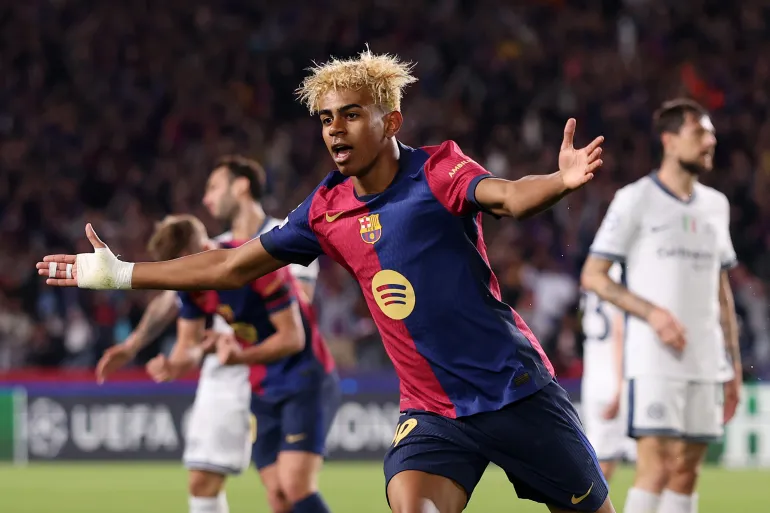

Karakter Favorit Saya: Lamine Yamal
Lamine Yamal adalah pemain sepak bola muda asal Spanyol yang bermain untuk FC Barcelona dan tim nasional Spanyol.
Alasan Saya Suka:
- Saya ingin menjadi seperti dia
- Dia masih muda tapi sangat hebat
- Dia main di klub besar seperti Barcelona
Biografi Singkat:
Lahir pada 13 Juli 2007 di Esplugues de Llobregat, Spanyol, Lamine Yamal adalah pemain sayap yang menonjol karena kecepatan dan tekniknya. Ia memulai karier di akademi La Masia dan menjadi pemain termuda yang debut di tim utama Barcelona.